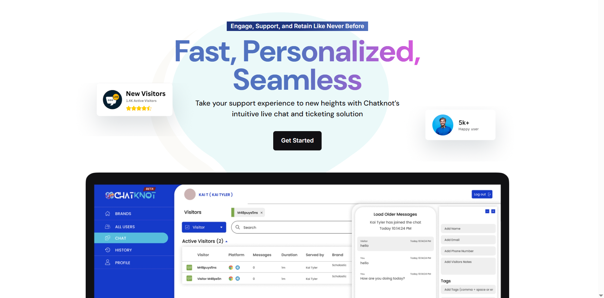

OPEN LIVE PRODUCT ↗
01 / FULL-STACK SAAS
ChatKnot
Real-time visitor tracking, live chat, analytics, authentication and operational tooling.
Balanced, image-led and easy to scan. Strong when every project deserves meaningful context without turning the page into a case-study marathon.

OPEN LIVE PRODUCT ↗Real-time visitor tracking, live chat, analytics, authentication and operational tooling.
 YOUR
YOURThree cinematic flavour worlds connected through one responsive product journey.
 Your barrier,
Your barrier,Editorial product storytelling with cinematic states and a focused purchase path.
A searchable browser utility platform built around fast task flows and privacy.


Layered product worlds, controlled state transitions and responsive art direction.
Interface, APIs, live events and operational data.
OPEN PRODUCT ↗
Developer utilities. Fast, private and searchable.
BROWSE TOOLS ↗